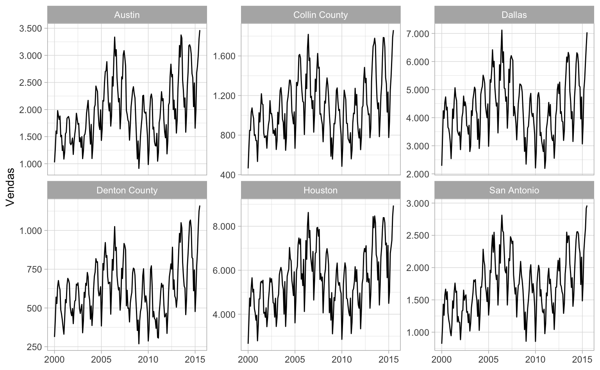
Facets
A função facet_wrap() do pacote ggplot2 do R permite decompor uma visualização em vários gráficos menores, chamados de “facets”. Cada gráfico é criado como uma combinação de um ou mais grupos nos dados. Isto pode ser útil para comparar diferentes subconjuntos de dados ou para exibir muitas séries de dados no mesmo gráfico de uma maneira organizada.
Este tutorial vai utilizar os seguintes geoms: geom_histogram(), geom_point(), geom_col() e geom_line(). Assim, se você não tiver familiaridade com estas funções consulte os posts abaixo:
Além disso, alguma manipulação de dados será necessária para remodelar os dados. Não é necessário ter conhecimento sobre estas funções adicionais, mas caso queira aprender mais sobre manipulação/limpeza de dados veja o post Manipular para enxergar: o básico da limpeza de dados.
Para começar vamos importar os pacotes necessários:
# Instala o pacote ggplot2 (se necessário)
install.packages(c("ggplot2", "dplyr", "tidyr", "gapminder", "GetBCBData"))
# Carrega os pacotes
library(ggplot2)
library(dplyr)
library(tidyr)
library(gapminder)
library(GetBCBData)Séries de tempo
Vamos começar importando algumas séries de tempo do site do Banco Central do Brasil utilizando o pacote GetBCBData. Vamos importar algumas séries do Índice de Produção Industrial (IPI). As séries são mensais, dessazonalizadas e indexadas com base nos valores médios de 2012.
# Código das séries
codigos <- c(28503, 28505, 28506, 28507, 28508, 28511)
# Importar as séries
series <- gbcbd_get_series(id = codigos, first.date = as.Date("2010-01-01"))Nossa base de dados series está no formato “long”. A coluna ref.date indica a data da observação, a coluna series.name identifica cada uma das séries pelo seu código numérico e, por fim, a coluna value retorna o valor de cada série em cada momento do tempo.
| ref.date | value | id.num | series.name |
|---|---|---|---|
| 2010-01-01 | 117 | 28503 | id = 28503 |
| 2010-02-01 | 117 | 28503 | id = 28503 |
| 2010-03-01 | 120 | 28503 | id = 28503 |
| 2010-04-01 | 120 | 28503 | id = 28503 |
| 2010-05-01 | 120 | 28503 | id = 28503 |
| 2010-06-01 | 119 | 28503 | id = 28503 |
Sabemos que é possível plotar múltiplas séries de tempo atribuindo, por exemplo, uma cor diferente para cada série. Note, contudo, que o resultado final fica muito confuso pois há sobreposição entre as séries.
# Gráfico de linha com cores diferentes para cada série
ggplot(data = series, aes(x = ref.date, y = value)) +
geom_line(aes(color = series.name))
Para dividir estas séries em pequenos gráficos distintos usamos a função facet_wrap(). Esta função exige apenas um argumento chamado facets que indica qual variável deve ser utilizada para “separar” os gráficos.
Podemos indicar a variável de duas formas: (1) usando a função vars(); ou (2) utilizando a sintaxe de fórmula que é precedida pelo “til” ~.
O código abaixo exemplifica ambas as opções. Vamos separar as séries usando a variável series.name.
# Gráfico usando vars()
ggplot(data = series, aes(x = ref.date, y = value)) +
geom_line() +
facet_wrap(vars(series.name))
# Gráfico usando ~variavel
ggplot(data = series, aes(x = ref.date, y = value)) +
geom_line() +
facet_wrap(~ series.name)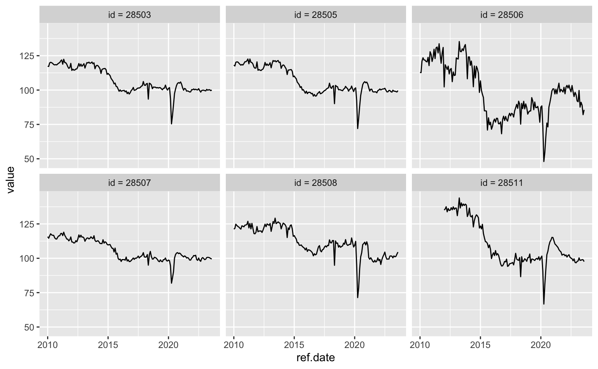
O gráfico de “facet” cria um gráfico separado para cada uma das séries. Note que os eixos são fixos para garantir que eles sejam comparáveis entre si. Assim, fica mais fácil de perceber como a série 28511 (insumos da construção civil) é mais curta que as demais e como a série 28506 (bens de capital) apresenta maior volatilidade que as outras séries.
A sintaxe com vars() é a mais atual e é a que será utilizada neste post. Podemos controlar a disposição dos gráficos restringindo o comportamento dos eixos com o argumento scales e definindo o número de colunas/linhas atribuindo valores para nrow (número de linhas) ou para ncol (número de colunas).
O argumento scales admite quatro valores:
scales = "free_x"- o eixo-x de cada gráfico é individualscales = "free_y"- o eixo-y de cada gráfico é individual.scales = "free"- ambos os eixos x e y são individuais em cada gráfico.scales = "fixed"- todos os gráficos compartilham os mesmos eixos (opção padrão)
O gráfico abaixo permite que cada gráfico tenha seu próprio eixo-y. Note como agora os gráficos individuais não são mais diretamente comparáveis entre si. Contudo, a variação individual de cada série fica mais evidente.
ggplot(data = series, aes(x = ref.date, y = value)) +
geom_line() +
facet_wrap(vars(series.name), scales = "free_y")
Deixando livre o eixo-x vemos como a série 28511 é alterada.
ggplot(data = series, aes(x = ref.date, y = value)) +
geom_line() +
facet_wrap(vars(series.name), scales = "free_x")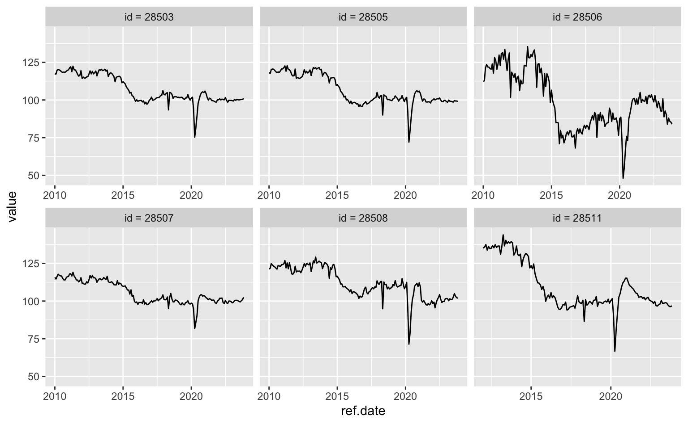
Por fim, podemos mudar a disposição dos gráficos alterando o número de linhas (nrow) ou de colunas (ncol). Note que a ordem os gráficos é definida pela ordem da variável series.name. Para modificar esta ordem é preciso definir os levels do factor que representa a variável categórica; e para modificar os pequenos títulos, que aparecem no topo de cada “facet”, é preciso definir os labels.
ggplot(data = series, aes(x = ref.date, y = value)) +
geom_line() +
facet_wrap(vars(series.name), nrow = 3)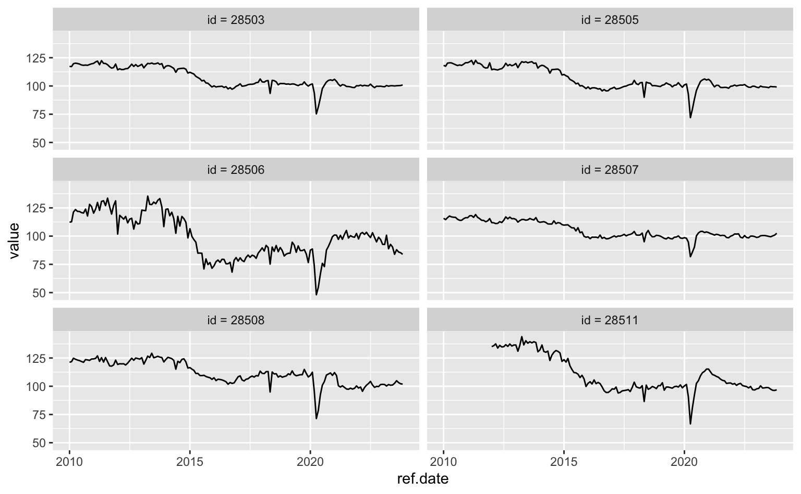
Scatterplots
Para nosso segundo exemplo vamos explorar a relação entre a riqueza de um país e a sua expectativa de vida usando os dados do pacote gapminder. Inicialmente, vamos restringir nosso foco apenas aos dados de 2007.
# Carrega o pacote gapminder
library(gapminder)
# Seleciona apenas dados referentes ao ano de 2007
gap07 <- subset(gapminder, year == 2007)A tabela de dados contém informações de vários países. A coluna continent indica a qual continente o país pertence, a coluna gdpPercap é o PIB per capita do país, em dólares constantes, a coluna lifeExp é a expectativa de vida ao nascer do país em anos.
| country | continent | year | lifeExp | pop | gdpPercap |
|---|---|---|---|---|---|
| Afghanistan | Asia | 2007 | 44 | 31889923 | 975 |
| Albania | Europe | 2007 | 76 | 3600523 | 5937 |
| Algeria | Africa | 2007 | 72 | 33333216 | 6223 |
| Angola | Africa | 2007 | 43 | 12420476 | 4797 |
| Argentina | Americas | 2007 | 75 | 40301927 | 12779 |
| Australia | Oceania | 2007 | 81 | 20434176 | 34435 |
Expectativa de Vida
Vamos montar um gráfico simples que ilustra a relação entre o PIB per capita e a expectativa de vida entre os países, seperando-os por continente. Utilizamos a variável PIB per capita em logaritmo usando a função log(). Para incluir uma linha de tendência utilizamos a função geom_smooth() com method = "lm".
ggplot(data = gapminder, aes(x = log(gdpPercap), y = lifeExp)) +
# Desenha pontos com cores diferentes para cada continente
geom_point(aes(color = continent), alpha = 0.5) +
# Linha de regressão linear
geom_smooth(method = "lm", se = FALSE) +
facet_wrap(vars(continent))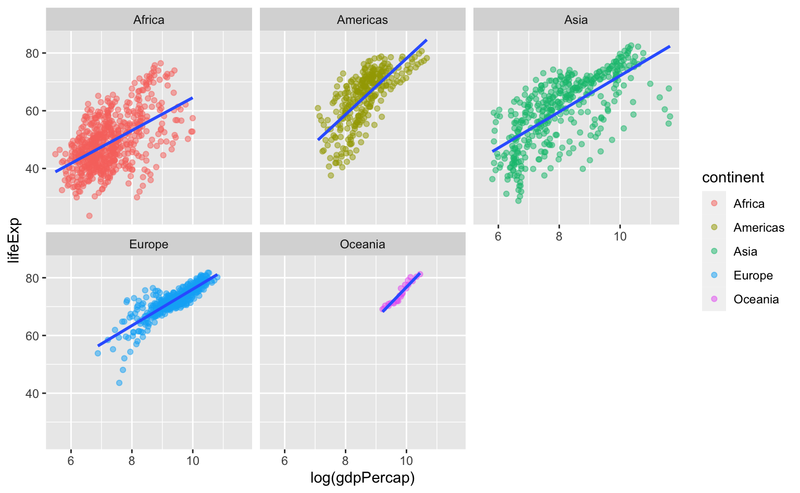
Note que pode-se dispensar da legenda, já que facet_wrap() gera pequenos títulos para cada gráfico individual.
ggplot(data = gapminder, aes(x = log(gdpPercap), y = lifeExp)) +
geom_point(aes(color = continent), alpha = 0.5) +
geom_smooth(method = "lm", se = FALSE) +
facet_wrap(vars(continent)) +
# Omite a legenda de cores.
guides(color = "none")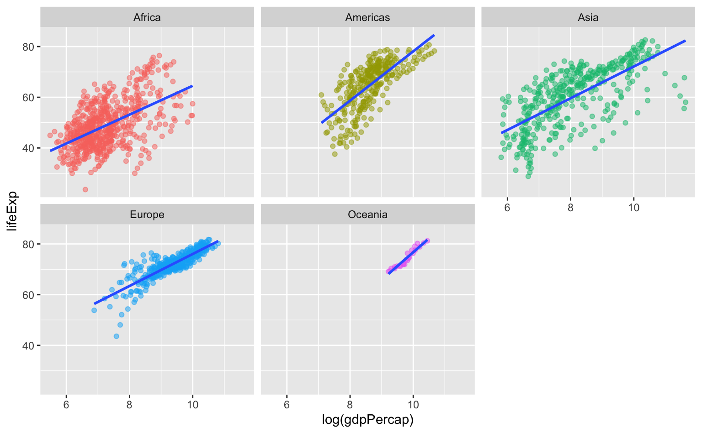
Há diferenças grandes na amplitude do PIB per capita entre os continentes. Podemos usar scales = "free_x" para dar um “zoom” em cada um deles.
ggplot(data = gapminder, aes(x = log(gdpPercap), y = lifeExp)) +
geom_point(aes(color = continent), alpha = 0.5) +
geom_smooth(method = "lm", se = FALSE) +
facet_wrap(vars(continent), scales = "free_x") +
guides(color = "none")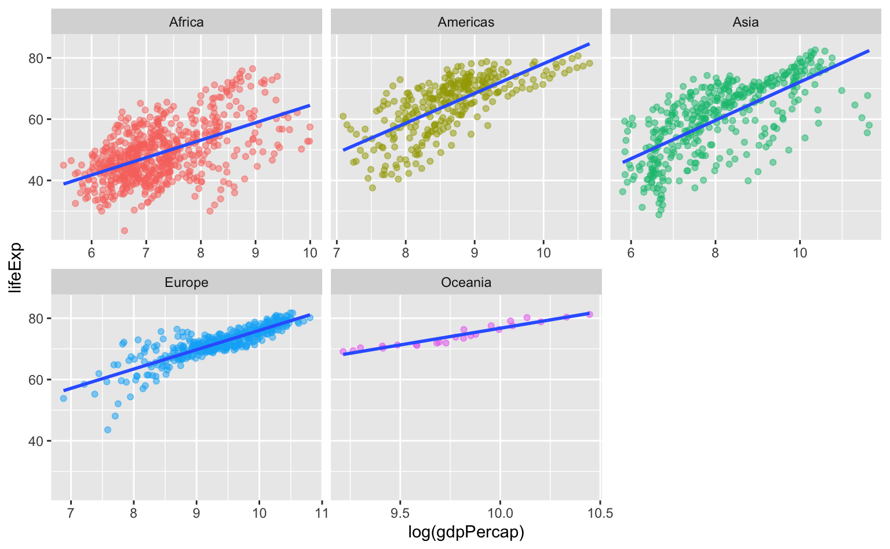
Facets com duas variáveis
A função facet_wrap() permite também criar pequenos gráficos em dois grupos distintos. No exemplo abaixo, vamos comparar a evolução do PIB per capita e da expectativa de vida nos páises asiáticos e nos países americanos, nos anos de 1952, 1972 e 1992.
Note que basta incluir a variável adicional dentro de vars().
# Seleciona apenas as linhas dos continentes Asia e Americas nos anos de 52, 72, e 92
gap_compare <- subset(
gapminder,
continent %in% c("Asia", "Americas") & year %in% c(1952, 1972, 1992)
)
ggplot(data = gap_compare, aes(x = log(gdpPercap), y = lifeExp)) +
geom_point() +
facet_wrap(vars(year, continent), ncol = 2)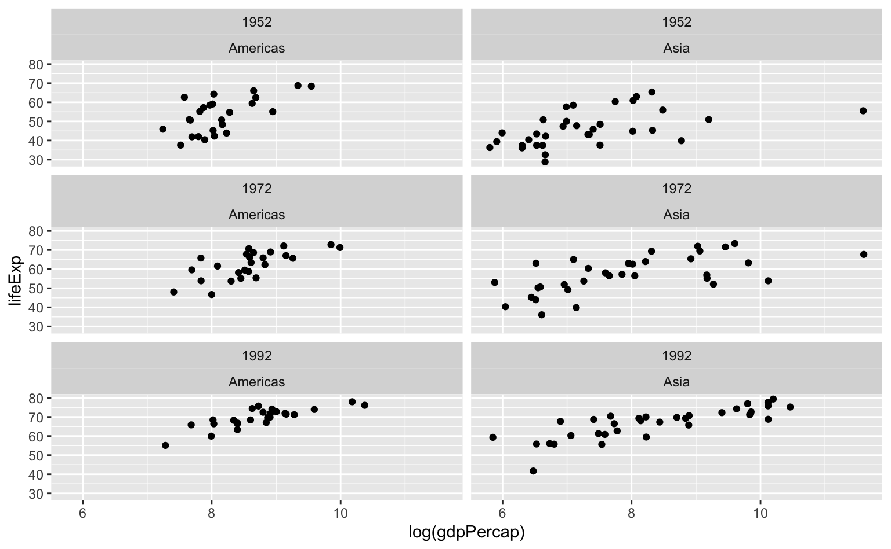
A ordem das variáveis dentro de vars() importa. A primeira variável fica “por fora” e é mapeada nas linhas, enquanto a segunda variável é mapeada nas colunas. A escolha da ordem depende de finalidade da visualização. No caso do gráfico acima, cada linha é um mesmo ano para dois continentes diferentes.
ggplot(data = gap_compare, aes(x = log(gdpPercap), y = lifeExp)) +
geom_point() +
facet_wrap(vars(continent, year))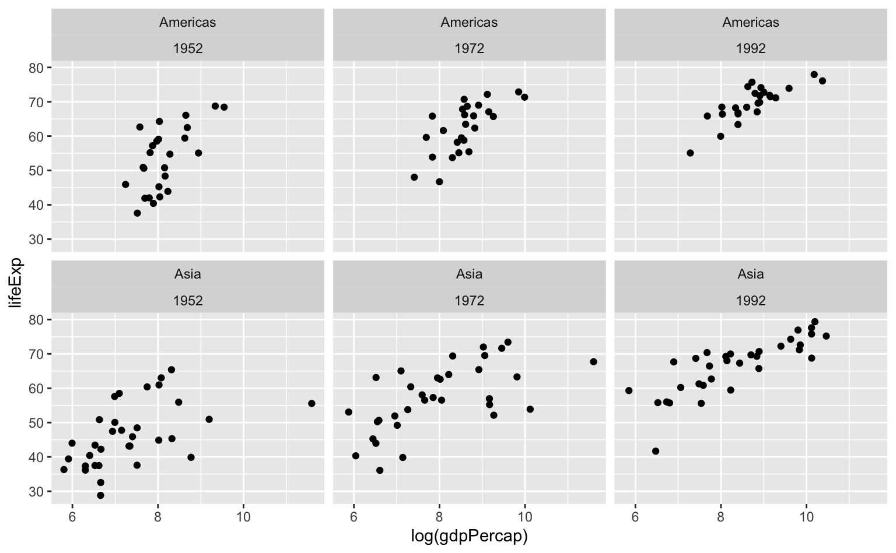
Neste segundo gráfico invertemos a ordem das variáveis e agora cada linha apresenta a trajetória de um continente (da esquerda para a direita). Vemos como os países americanos gradualmente foram se aglomerando no canto superior-direito do gráfico (renda mais elevada e maior expectativa de vida). Já nos gráficos de baixo, vemos como os países asiáticos estavam bastante atrás dos países americanos em 1952 e 1972. Além disso, os países asiáticos estavam muito mais dispersos no eixo-x (PIB per capita). O salto veio entre 1972 e 1992, quando houve aumento tanto na renda como na expectativa de vida.
Por fim, podemos também misturar gráficos. O código abaixo gera vários gráficos separados por continente como nos primeiros exemplos, mas agora todos os países estão plotados no fundo, em cor cinza transparente. Esta visualização ajuda a contextualizar a posição dos países relativamente ao mundo.
# Base de dados auxiliar para plotar os pontos no fundo do gráfico
pontos_fundo <- dplyr::select(gap07, -continent)
ggplot(data = gap07, aes(x = log(gdpPercap), y = lifeExp)) +
geom_point(data = pontos_fundo, color = "gray50", alpha = 0.5) +
geom_point(aes(color = continent), alpha = 0.8) +
facet_wrap(vars(continent)) +
scale_color_brewer(type = "qual", palette = 2) +
guides(color = "none")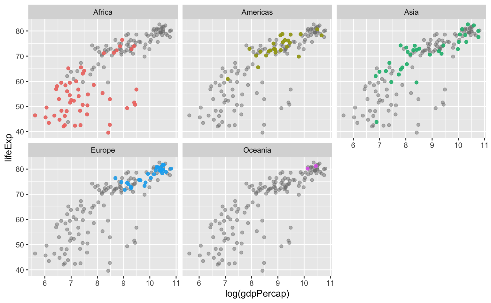
Histograma
Expectativa de Vida
Vamos usar a mesma base de dados do gapminder para comparar a distribuição global da expectativa de vida e do PIB per capita no mundo. Como queremos comparar a evolução da distribuição no tempo é importante manter os eixos fixos.
ggplot(gapminder, aes(x = lifeExp)) +
geom_histogram(bins = 10, color = "white") +
facet_wrap(vars(year))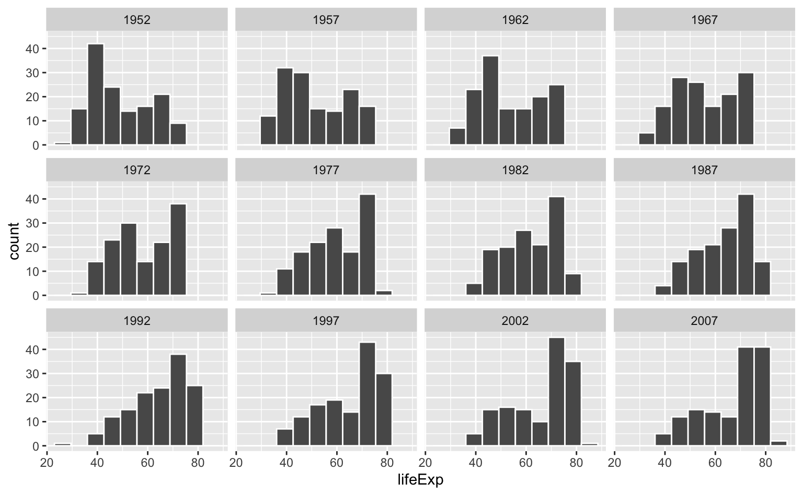
Vemos no gráfico que, de maneira geral, os países convergiram para a direita da distribuição. Isto indica não apenas que houve um aumento da expectativa de vida, mas também que boa parte dos países hoje tem expectativa de vida na casa de 70-80 anos.
O código abaixo faz o mesmo tipo de gráfico para a distribuição do PIB per capita entre os países. Novamente usamos a transformação log. Vemos que houve uma transição para a direita da distribuição (mais países de renda-alta), mas ainda há bastante variância. Em alguns momentos, a distribuição parece quase seguir uma distruição uniforme com outliers - tanto acima como abaixo.
ggplot(gapminder, aes(x = log(gdpPercap))) +
geom_histogram(bins = 15, color = "white") +
facet_wrap(vars(year))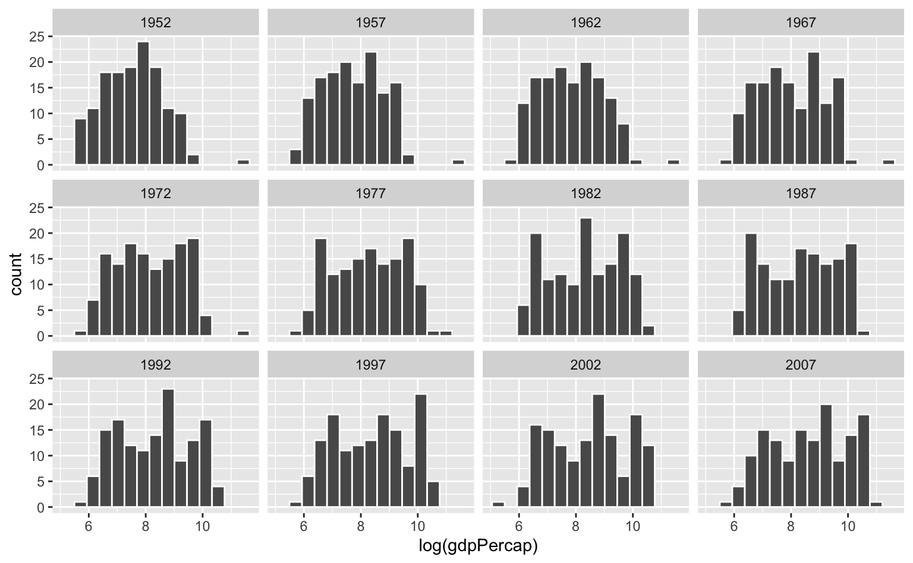
Preços de imóveis
Vamos relembrar um dos exemplos do post de histograma. Usando uma base de preços imobiliários em cidades do Texas, EUA, fizemos um histograma que combinava informação de quatro cidades diferentes. Este foi um exercício para exemplificar como usar cores para representar diferentes grupos nos dados.
Por conveniência, segue abaixo o código para gerar o exemplo citado. Vemos que é possível perceber algumas diferenças entre as cidades: Austin, por exemplo, têm imóveis com preços mais elevados (à direita no gráfico) do que San Angelo. Os histogramas empilhados, contudo, dificultam a comparação na faixa de 100-200 mil dólares.
# Cria um vetor com as cidades selecionadas
cities <- c("Austin", "Dallas", "Houston", "San Angelo")
# Seleciona apenas as linhas que contêm informações sobre estas cidades
subtxhousing <- subset(txhousing, city %in% cities)
ggplot(data = subtxhousing, aes(x = median)) +
geom_histogram(aes(fill = city))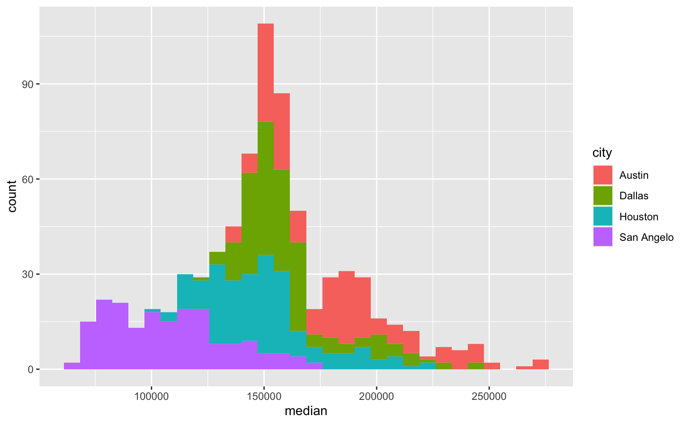
Podemos refazer o mesmo exercício aplicando agora a função facet_wrap(). Como os eixos são constantes entre os gráficos, fica fácil comparar os preços medianos de venda de cada uma das cidades.
ggplot(data = subtxhousing, aes(x = median)) +
# Histograma
geom_histogram(
aes(fill = city),
# Define o número de intervalos
bins = 25,
color = "white") +
# Remove a legenda de cores
guides(fill = "none") +
facet_wrap(vars(city))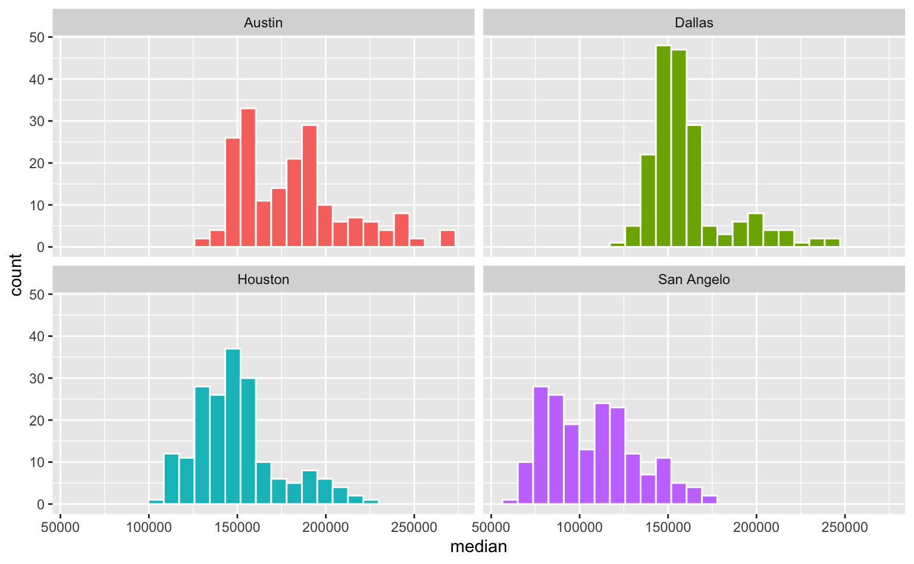
Note que agora as cores perdem parte de seu propósito, já que os dados estão dividos em “facets”. Como cada “facet”, na verdade, apresenta a mesma variável (preço mediano de venda) pode-se fazer o argumento que o mais apropriado seria manter uma mesma cor para cada um dos gráficos.
Variando o tamanho dos intervalos
Sabemos que um bom histograma depende do número correto de colunas/intervalos. No gráfico acima, selecionamos bins = 25, mas dificilmente este valor é o mais apropriado para cada uma das cidades.
Para variar o número de intervalos, alteramos o número de bins ou definimos o tamanho de cada um dos intervalos via binwidth. Como temos múltiplos histogramas podemos inserir um vetor de números como argumento, como bins = c(12, 30, 25, 17), por exemplo. O mesmo vale para o argumento bindwidth.
Outra opção é usar uma função customizada como no exemplo abaixo. Neste código usamos regra de Freedman–Diaconis para selecionar o tamanho ótimo dos intervalos em cada um dos histogramas usando as funções base ceiling(), IQR() e length(). Note que também seria possível utilizar a função nclass.FD().
ggplot(data = subtxhousing, aes(x = median)) +
geom_histogram(
fill = "#2a9d8f",
color = "white",
# Escolhe o tamanho ótimo do intervalo
binwidth = function(x) ceiling(2 * IQR(x) / (length(x)^(1/3)))) +
facet_wrap(vars(city))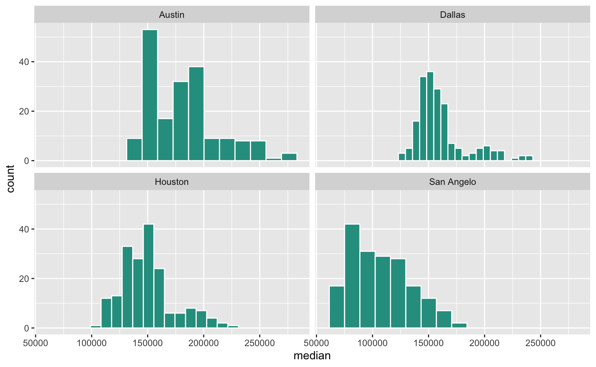
Colunas
Totais de vendas
O exemplo abaixo mostra o número total de imóveis vendidos nas mesmas quatro cidades. Note que o eixo-y está livre, que enfatiza como a dinâmica das vendas seguiu trajetória similar nas quatro cidades, ainda que o volume de vendas seja bastante distinto.
sales_city <- subtxhousing |>
filter(year >= 2005, year <= 2012) |>
group_by(city, year) |>
summarise(total_sales = sum(sales, na.rm = TRUE))
ggplot(data = sales_city, aes(x = year, y = total_sales)) +
geom_col(fill = "#2a9d8f") +
facet_wrap(vars(city), scales = "free_y") +
# Modifica o eixo-y para incluir separador de milhar
scale_y_continuous(labels = scales::label_number(big.mark = "."))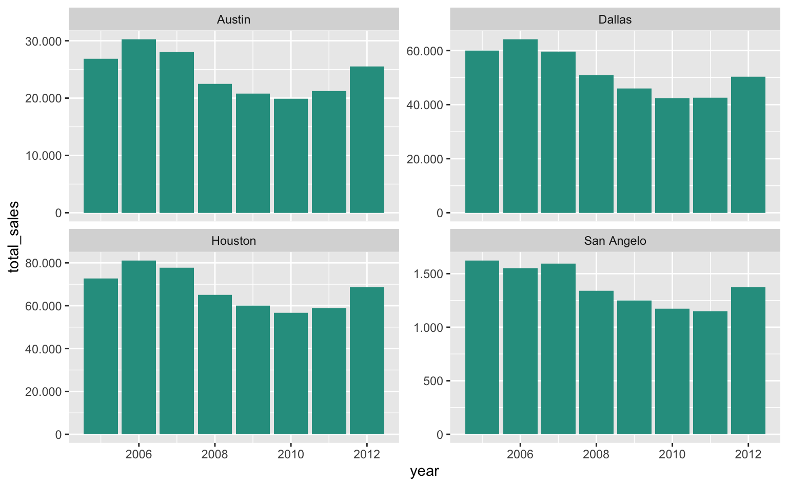
Grupos incompletos
Gráficos de coluna também podem servir bem quando temos grupos incompletos. O exemplo abaixo mostra o preço médio de venda de imóveis por números de dormitórios. A variável de “facet” é a coluna colonial, uma variável binária que indica se o estilo arquitetônico da casa é colonial (rústico).
A base utilizada é a hprice do pacote wooldridge a mesma utilizada no post de gráficos de colunas.
# Carrega a base de dados
library(wooldridge)
data("hprice1")
# Estima o preço médio de venda por número de dormitórios x colonial
price <- hprice1 |>
group_by(bdrms, colonial) |>
summarise(avg = mean(price))
# Cria um grid com todas as combinações de dormitórios x colonial
grid <- expand_grid(bdrms = 1:max(price$bdrms), colonial = 0:1)
# Junta os dados de preços agrupados com as combinações
data <- left_join(grid, price, by = c("bdrms", "colonial"))
# Gráfico
ggplot(data = data, aes(x = as.factor(bdrms), y = avg)) +
geom_col() +
facet_wrap(vars(colonial), ncol = 1) +
# Gira o gráfico
coord_flip()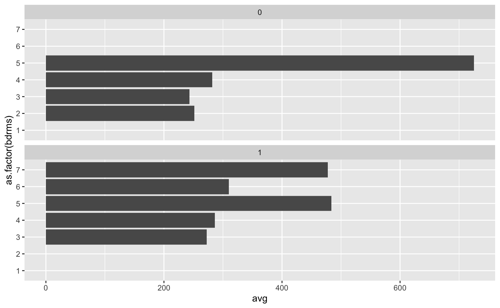
Fica imediatamente óbvio que não houve vendas de imóveis de 1 e 2 dormitórios no estilo colonial/rústico, sugerindo que este estilo é mais presente entre imóveis maiores. No mesmo sentido, não há vendas de imóveis de 6 e 7 dormitórios que não sejam construídos no estilo colonial.
Wraps ou Grids
Comparação das funções
Até agora focamos somente na função facet_wrap() que cria vários pequenos gráficos com base nos níveis de uma variável categórica. Vimos que podemos também combinar duas variáveis para comparar, por exemplo, a evolução do PIB per capita com a expectativa de vida entre dois continentes ao longo do tempo.
Quando trabalhamos com duas variáveis categóricas vale a pena experimentar com a função facet_grid(). A sintaxe desta função é muito similar a da função facet_wrap(), mas a primeira é especificamente voltada para casos em que há duas variáveis categóricas de interesse.
A função facet_grid() também permite controle mais direto e intuitivo sobre o layout final dos “facets” pois recebe os argumentos rows e cols.
# Exemplo usando facet_wrap
facet_wrap(facet = vars(x, y))
# Exemplo usando facet_grid
facet_grid(rows = vars(x), cols = vars(y))O código abaixo faz um exemplo comparativo. Note que há poucas diferenças entre os gráficos, mas que o resultado do facet_grid() é um pouco mais otimizado.
ggplot(data = gap_compare, aes(x = log(gdpPercap), y = lifeExp)) +
geom_point() +
facet_wrap(facets = vars(year, continent), ncol = 2) +
labs(title = "facet_wrap")
ggplot(data = gap_compare, aes(x = log(gdpPercap), y = lifeExp)) +
geom_point() +
facet_grid(rows = vars(year), cols = vars(continent)) +
labs(title = "facet_grid")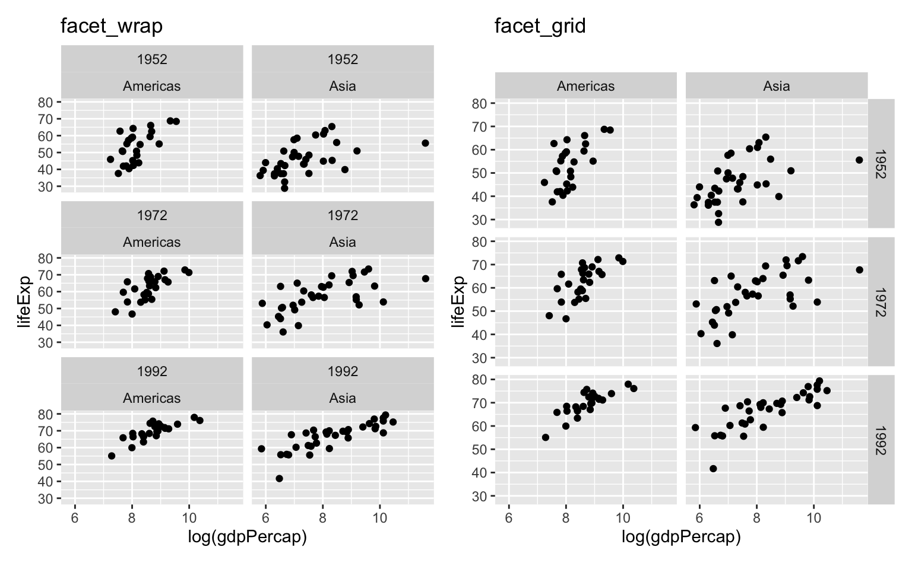
Uma importante vantagem da função facet_grid() é a de poder plotar a distribuição conjunta dos dados via o argumento margins = TRUE. O gráfico agora contém uma terceira coluna que mostra o gráfico de dispersão com todos os dados da amostra.
ggplot(data = gap_compare, aes(x = log(gdpPercap), y = lifeExp)) +
geom_point() +
facet_grid(rows = vars(year), cols = vars(continent), margins = TRUE)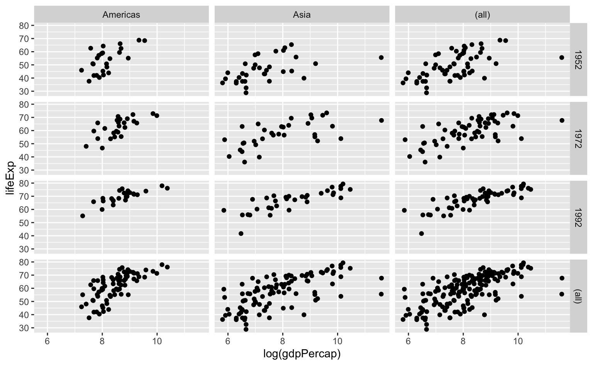
Vendas de imóveis
Para melhor ilustrar algumas das capacidades da facet_grid() vamos importar uma versão aumentada da base txhousing do pacote ggplot2. O código abaixo importa uma versão desta base acrescida de colunas que identificam a quais condados (counties) cada cidade pertence, além de informações de população e crescimento populacional1.
txhousing_counties <- read_csv("...")Vamos montar um gráfico que mostra o preço médio de venda em 2012 nas principais cidades do Texas (apenas cidades com mais de 100 mil habitantes), agrupando as cidades pelo condado principal as quais elas pertencem. Assim, temos uma variável categórica no eixo-x e uma variável categórica no “facet”.
O código abaixo primeiro faz a manipulação dos dados e depois monta o gráfico. Note o uso dos argumentos scales = "free" e space = "free".
# Estima o preço médio de venda em 2012 (ponderado pelas vendas mensais)
# Agrupado por cidade x condado (principal)
price_2012 <- txhousing_counties |>
filter(year == 2012, population > 100000) |>
group_by(city, primary_county) |>
summarise(price = weighted.mean(median, sales, na.rm = TRUE))
# Gráfico
ggplot(data = price_2012, aes(x = city, y = price)) +
geom_col() +
facet_grid(
rows = vars(primary_county),
scales = "free",
space = "free") +
# Vira o gráfico
coord_flip() +
# Adiciona seperador de milhar no eixo-y
scale_y_continuous(labels = scales::label_number(big.mark = ".")) +
# Título dos facets na horizontal
theme(
strip.text.y = element_text(angle = 0)
)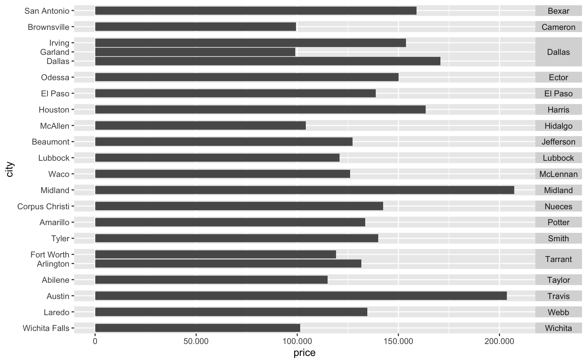
Crise Imobiliária de 2008
Como último exercício, podemos combinar vários conhecimentos adquiridos nos posts anteriores e mostrar a evolução dos preços em cada cidade, no período 2005-2011. Assim, temos um período de 3 anos antes e depois da crise imobiliária de 2008.
O código abaixo estima o preço médio de venda anual, ponderado pelas vendas mensais, em cada cidade. O gráfico final inclui apenas cidades que contêm observações completas em todos os anos.
price_sales <- txhousing_counties |>
filter(year >= 2005, year <= 2011) |>
group_by(year, city, primary_county) |>
summarise(price = weighted.mean(median, sales)) |>
group_by(city) |>
mutate(check = n()) |>
filter(check == 7)O código abaixo pode parecer muito extenso e confuso à primeira vista, mas lembre-se de focar em cada elemento individualmente. Como o ggplot funciona somando elementos basta focar em cada elo da cadeia individualmente. Por fim, vale notar que o elemento temático que controla o título de cada “facet” é o strip.text2.
ggplot(data = price_sales, aes(x = city, y = price)) +
# Desenha os círculos
geom_point(
# Cor de dentro do círculo representa o ano
aes(fill = as.factor(year)),
# Cor do contorno
color = "gray50",
shape = 21,
size = 2,
# Transparência das cores para evitar overplotting
alpha = 0.8) +
# Coloca os gráficos no grid
facet_grid(
rows = vars(primary_county),
scales = "free",
space = "free") +
# Adiciona seperador de milhar no eixo-y
scale_y_continuous(labels = scales::label_number(big.mark = ".")) +
# Controla as cores que preenchem os círculos
scale_fill_manual(
name = "Year",
values = c(
"#006d77", "#42999B", "#83c5be", "#edf6f9", "#ffddd2",
"#F1B9A5", "#e29578")) +
# Força a legenda de cores a ser lado-a-lado numa única linha
guides(fill = guide_legend(nrow = 1)) +
# Vira o gráfico de lado
coord_flip() +
# Título, subtítulo e nome dos eixos
labs(
title = "Evolution of House Prices in Texas",
subtitle = "Sales-weighted average sale prices in main cities in Texas",
x = NULL,
y = "Average Sale Price (US$)") +
# Tema minimalista com fundo branco
theme_light() +
# Ajusta a orientação dos títulos dos facets
theme(
legend.position = "top",
strip.text.y = element_text(angle = 0)
)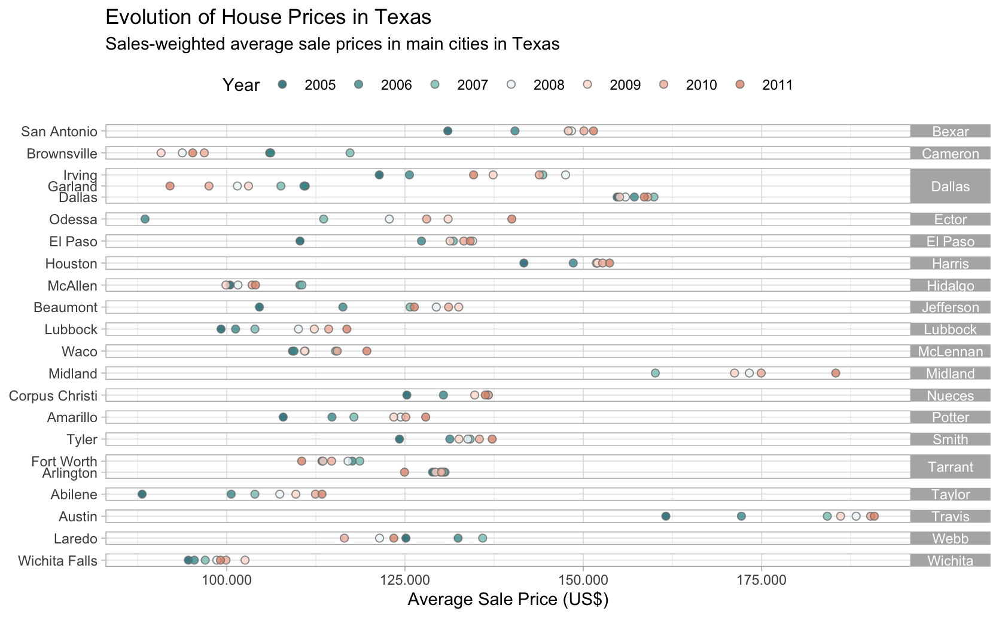
O gráfico acima é muito rico em informação. Cada ponto indica o preço médio de venda dos imóveis na cidade; as cores em verde indicam pontos antes da crise imobiliária, enquanto as cores em laranja indicam pontos após a crise imobiliária; o ano da crise, 2008, está em branco.
A crise imobiliária parece ter tido efeitos heterogêneos nas cidades.
Em Dallas, por exemplo, os preços caíram e estagnaram: as observações estão quase todas sobrepostas. Em algumas cidades como Brownsville e Garland, os preços caíram e até 2011 ainda estavam abaixo dos valores médios pré-crise.
Em algumas cidades centrais como Austin, Houston e San Antonio, a crise parece ter desacelerado o ritmo de crescimento. No período 2005-2007 há um crescimento forte nos preços, enquanto que o período 2008-2011 é de estagnação total.
Já em cidades como Lubbock, Wacco e Midland, por exemplo, a crise parece ter tido efeito momentâneo: os preços voltam a crescer no período 2009-2011.
Resumo
O uso de gráficos com “facets” permite comparar facilmente diferentes subconjuntos de dados ou exibir muitas séries de dados no mesmo gráfico de uma maneira organizada. A função facet_wrap() é a mais indicada quando temos uma única variável categórica e queremos visualizar a mesma informação em cada um dos níveis. Quando temos duas variáveis categóricas, vale a pena experimentar a função facet_grid(). Usando um pouco de criatividade podemos fazer gráficos bastante interessantes.
Há alguns fatores a se considerar: (1) se houver muitos grupos, cada “facet” pode acabar pequena demais, dificultando a compreensão dos dados; (2) para garantir a comparação entre os grupos é importante manter os eixos fixos; (3) se a intenção for somente observar cada série individualmente, lado a lado, pode-se “liberar” os eixos.
A preparação dos dados é bastante importante na hora de montar um gráfico de facets. A variável que separa os gráficos também é utilizada como título de cada “facet” e também para ordená-los. Assim é importante pensar qual a ordem mais adequada e definir títulos que sejam de fácil interpretação.
Outros posts citados
Footnotes
O código utilizado para gerar esta base está disponível no link.↩︎
Outros elementos temáticos deste título, como a cor do fundo ou a sua posição são controlados via outros elementos
strip_*. Para mais detalhes consultehelp("theme"). Veja também o post Estético: tipografias e temas.↩︎